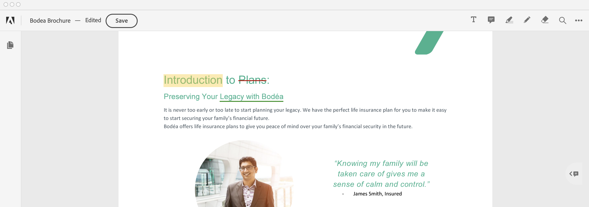

Comments and Markup¶
The Embed API provides the capability to add comments to PDF documents using the commenting and markup tools. You can add comments with add text comment tool, sticky notes, highlights, drawing tool, strikethrough and underline text. In addition to these tools, there is also an eraser tool which can be used to erase parts of drawing annotations. The basic commenting features supported by Embed API include:
Adding text comments, sticky notes, highlights, underlines, strikethroughs, drawing markups, etc.
Updating annotations
Removing annotations
Replying to annotations
Single line implementation¶
You can enable/disable commenting tools with a single line. Commenting is enabled by default with the Embed API and the commenting tools are displayed in the top bar. You can disable commenting by adding showAnnotationTools: false (line 9) to the previewConfig object in the embedded JavaScript.
1 2 3 4 5 6 7 8 9 10 11 12 | <div id="adobe-dc-view"></div>
<script src="https://documentcloud.adobe.com/view-sdk/main.js"></script>
<script type="text/javascript">
document.addEventListener("adobe_dc_view_sdk.ready", function () {
var adobeDCView = new AdobeDC.View({clientId: "<YOUR_CLIENT_ID>", divId: "adobe-dc-view"});
adobeDCView.previewFile({
content:{location: {url: "https://documentcloud.adobe.com/view-sdk-demo/PDFs/Bodea Brochure.pdf"}},
metaData:{fileName: "Bodea Brochure.pdf"}
}, {showAnnotationTools: false});
});
</script>
<!--Get the samples from https://www.adobe.com/go/pdfembedapi_samples-->
|
Commenting feature overview¶
The PDF Embed API provides several annotation types, including freehand text comments, sticky notes, text markup, and freehand drawing. It also provides an eraser tool to remove parts of freehand drawings.
All of these types deliver the following functionality:
Support for adding replies to annotations so that document recipients can respond to the author’s original markup. All comments appear in the right-hand comments panel.
Adding or updating any annotation enables the Save button.
Once saved, the annotation is added to the PDF and becomes part of the PDF buffer.
Freehand text comments¶
Users can add freehand text anywhere on a PDF page as follows: select the Add Text tool in the top bar, click on the page to place the cursor and type in your desired text. Click outside the text box to add the annotation. A comment with the same text also appears in the right-hand comments panel. Features include:
Updating free text annotation: Click on an existing add text annotation to edit the text or change any of the text attributes from the toolbar. You can change attributes such as colour and font size of the free text. Note: The display of the text size is relative to the PDF zoom level. Text can also be edited by clicking on the Edit option in the overflow menu for the associated comment in the comments panel.
Removing free text annotation
Click any existing add text annotation to open the toolbar, and choose Delete.
Alternatively, click the overflow menu for the associated comment in the comments panel, and choose Delete.
Moving or resizing free text annotation: Place the cursor on an existing add text annotation and move the free text to a different location on the same PDF page. You can also drag one of the corner circles of the text box to resize.
Sticky notes¶
Use the sticky note to add a text message and place it anywhere on the PDF. There is no support for resizing. Features include:
Adding a sticky note
Select the sticky note tool in the top bar and click where you want to place the note. This opens a comment box where you can type in some text. Click Post to add the comment.
You can also add a sticky note by performing right-click and selecting Add sticky note option from the popover menu.
Updating sticky note
Click on an existing sticky note to open a toolbar to change the colour of the note.
Edit the comment by clicking on the Edit option in the overflow menu in the comments panel.
Removing sticky note
Click on an existing sticky note to open the toolbar and click on delete option to remove the note.
Alternatively, click on the overflow menu for the comment in the comments panel and click on the Delete option.
Moving a sticky note: Place the cursor over an existing sticky note and drag to move it to some other location.
Text markup annotations¶
Embed API supports the following highlighting, strikethrough, and underlining. Features include:
Adding a text markup: There are two ways to add a text markup:
Click the highlight tool in the top bar and select some text. The text gets highlighted and a comment box opens up where you can type in some text.
Select some text. Select either the highlight, strikethrough or underline options from the context menu. The markup is added and a comment box opens up where you can type in some text.
Updating a text markup: While moving or resizing text markup is unsupported, you can:
Click on an existing text markup to open a toolbar to change the colour.
You can edit the comment by clicking on the Edit option in the overflow menu in the comments panel.
Removing a text markup
Click on an existing text markup to open the toolbar, and choose Delete.
Click on the overflow menu for the comment in the comments panel, and choose Delete.
Drawing tool¶
Use this tool to create any freehand drawing or shape. Features include:
Adding a drawing
Select the drawing tool in the top bar, click where you want to begin drawing and drag to create a shape. You can release the mouse button, move the pointer to a new location, and continue drawing. The drawing gets added along with a default comment in the comments panel.
You can also add a drawing by performing right-click and selecting Use drawing tool option from the popover menu.
Updating a drawing
Click on an existing drawing to display the toolbar. You can change attributes such as colour and stroke width.
You can edit the comment by clicking on the Edit option in the overflow menu in the comments panel.
Removing a drawing
Click on an existing drawing to display the toolbar and click on the delete option.
Alternatively, click on the overflow menu for the comment in the comments panel and click on the Delete option.
Moving or resizing a drawing
Place the cursor over a drawing and drag to move it to a different location.
Place the cursor over a drawing and drag one of the corner circles to resize the annotation.
Eraser tool¶
This tool can be used to erase parts of freehand drawing annotations you added via the drawing tool.
Select the eraser tool in the top bar and drag it across the areas of the drawing annotation that you wish to remove. The updated drawing annotation is saved to the PDF.
Parts of a single drawing or multiple drawing annotations can be erased at the same time. The corresponding drawing annotations are updated in the PDF.
If the entire drawing is erased, then that particular drawing annotation gets removed from the PDF.
Annotations API overview¶
The annotations API supports programmatic importing, creating, deleting, updating, and exporting both comments (sticky notes) and other types of markup such as underlines and highlight. The PDF Embed API provides two configuration variables to enable and control annotations:
enableAnnotationAPIs: Default is false. true enables the APIs. The client’s application passes the annotations and PDF buffer to the PDF Embed API which renders it in the browser.includePDFAnnotations: Default is false. When true, the API displays existing annotations. Supported annotations can be modified and unsupported annotations are read only. Annotation modifications enable the Save button so that add, update, and delete actions may be saved to the PDF.
Note
When only enableAnnotationAPIs is true, adding or updating annotations does not alter the original PDF content. When both these variables are true, the APIs alter the original PDF.
Both variables may be passed as a preview configuration to the previewFile API.
Preview configuration
{
enableAnnotationAPIs: <Boolean, default=false>,
includePDFAnnotations: <Boolean, default=false>
}
Since these variables interact with each other, there are several scenarios:
If the annotation APIs are not enabled (
enableAnnotationAPIs: false), thenincludePDFAnnotationsis ignored.If annotations APIs are enabled (
enableAnnotationAPIs: true) andincludePDFAnnotations: false, then:
The PDF Embed API does not display existing annotations, but will display new ones.
Any annotation added or updated either from the UI or API is not saved to the PDF buffer; therefore, no Save button appears in the top bar.
If both
enableAnnotationAPIsandincludePDFAnnotationsare true, then:
Any existing annotation the PDF Embed API supports is displayed and accessible through these APIs. Note that unsupported annotations appear in read-only mode and are not accessible to the APIs.
Any annotation added or updated from UI or API is saved to the PDF buffer, and the Save button is enabled when the PDF has unsaved changes.
Annotation schema¶
Annotation data passed to or sent from any API should exist in a well known and widely accepted standard format. In support of standards and global adoption then, the PDF Embed API supports a strict subset of the Web Annotations Data Model (a W3C recommendation). The Web Annotations Data Model specification provides comprehensive information about a resource or associations between resources.
The PDF Embed API’s annotation model therefore requires the following key fields:
{
"@context": [
"https://www.w3.org/ns/anno.jsonld",
"https://comments.acrobat.com/ns/anno.jsonld"
],
"type": "Annotation",
"id": <ANNOTATION_ID>,
"bodyValue": String,
"motivation": String,
"stylesheet": {
"type": "CssStylesheet",
"value": <CSS_DEFINITION>,
},
"target": <target-node> OR <target-reply>,
"creator": {
"type": "Person",
"name": String,
},
"created": DateTime,
"modified": DateTime,
}
Parameter |
Description |
Required? |
|---|---|---|
context |
The context that determines the meaning of the JSON as an annotation. The annotation MUST have these two values in the context parameter: |
Yes |
type |
The annotation type which must be Annotation. |
Yes |
id |
The annotation’s unique identifier. |
Yes |
bodyValue |
The string value of the plain text comment associated with the annotation. |
Yes |
motivation |
The motivation for an annotation is a reason for its creation and might include things like replying to another annotation or commenting on a resource. The value can be either commenting or replying. |
Yes |
target |
The value can be either in the form of |
Yes |
creator.type |
Creator refers to the agent responsible for creating the annotation. The PDF Embed API’s required value is Person which denotes a human agent. |
Yes |
creator.name |
The name of the annotation creator. |
Yes |
created |
The date-time in UTC timezone format to denote the annotation modification time after it was created. Use xsd:dateTime with the UTC timezone expressed as “Z”. |
Yes |
modified |
The date-time in UTC timezone format to denote the annotation modification time after it was created. Use xsd:dateTime with the UTC timezone expressed as “Z”. |
Yes |
source |
The PDF’s unique identifier. This is same as the value of |
Yes |
stylesheet.type |
The type of style applied to freehand text annotations. The only permissible value is CssStylesheet. |
No |
stylesheet.value |
This specifies the font size and colour as a valid CSS JSON. This parameter is applicable only in case of freehand text annotations. Note: In the current implementation, there is no support to set the font family of the text annotation. Depending on the language of the text, the following font families will be applied:
|
No |
If the annotation is a comment on the PDF, then the value of the target parameter is target-node as follows:
{
"source": <FILE_ID>,
"selector": {
"type": "AdobeAnnoSelector",
"subtype" : "note" | "strikeout" | "highlight" | "underline" | "shape",
"node": {
"index": <PAGE_INDEX>
},
"boundingBox" : [Xmin, Ymin, Xmax, Ymax],
"quadPoints" : [ .... ],
"inkList" : [ [...], [...], ... ],
"strokeColor": <COLOR_HEX_CODE>,
"strokeWidth": Float,
"opacity": Float (from 0.0 to 1.0),
"styleClass": String
}
}
If the annotation is a reply to an existing annotation, then the value of the target parameter is target-reply which contains a single parameter denoting the annotation ID of the parent annotation (the annotation associated with the current reply):
{
"source": <ANNOTATION_ID>,
}
Parameter name |
Description |
Required? |
|---|---|---|
source |
The PDF’s unique identifier |
Yes |
selector.type |
The PDF Embed API supports one value: AdobeAnnoSelector |
Yes |
selector.subtype |
The type of annotation. Permissible values include:
|
Yes |
selector.node |
The element within a document upon which the user is commenting. For PDF documents, the |
Yes |
selector.node.index |
The PDF page index starting from 0. |
Yes |
selector.boundingBox |
The PDF page coordinates of the rectangular bounding box containing the annotation. The value will be an array of four coordinates [Xmin, Ymin, Xmax, Ymax] which represent the box bounded from Xmin to Xmax on X-axis and Ymin to Ymax on Y-axis. All the values Xmin, Ymin, Xmax, and Ymax are of float type. |
Yes |
selector.quadPoints |
This is used only for the highlight, underline or strikeout annotation types. The PDF page coordinates of the upper-left, upper-right, lower-left and lower-right corners of each rectangular bounding box containing the annotation. The value will be an array of multiple coordinates [X1, Y1, X2, Y2, …] of all the rectangular boxes. All the coordinate values are of float type. |
Required only if annotation subtype is highlight, underline or strikeout. |
selector.inkList |
Float. The PDF page coordinates of the shape annotation. The value will be an array of N arrays [[X1, Y1, X2, Y2, …], [X1, Y1, X2, Y2, …], …], where each array is a series of alternating X-axis and Y-axis coordinates specifying points along which the shape is drawn. |
Required only if annotation subtype is shape. |
selector.strokeColor |
The HEX color of the annotation as displayed in the UI. |
No |
selector.strokeWidth |
Float value specifying the line thickness of the drawing annotation. |
No |
selector.opacity |
Float value between 0.0 and 1.0 specifying the opacity of the annotation. |
No |
styleClass |
Contains the CSS class specified in stylesheet.value. The style will be applied to the add text annotation. |
No |
Parameter name |
Description |
Required? |
|---|---|---|
source |
The unique identifier of the parent annotation with which this reply is associated. |
Yes |
Annotation data examples¶
You can find addtional samples and examples code in the samples repo.
Note annotation data¶
{
"@context": [
"https://www.w3.org/ns/anno.jsonld",
"https://comments.acrobat.com/ns/anno.jsonld"
],
"type": "Annotation",
"id": "079d66a4-5ec2-4703-ae9d-30ccbb1aa84c",
"bodyValue": "I added a note!",
"motivation": "commenting",
"target": {
"source": "77c6fa5d-6d74-4104-8349-657c8411a834",
"selector": {
"node": {
"index": 1
},
"opacity": 0.4,
"subtype": "note",
"boundingBox": [
69.3311157226562,
76.4769897460938,
86.9484252929688,
94.63037109375
],
"strokeColor": "#ff0808",
"type": "AdobeAnnoSelector"
}
},
"creator": {
"type": "Person",
"name": "John Smith"
},
"created": "2018-08-02T14:45:37Z",
"modified": "2020-01-20T07:54:10Z"
}
Reply annotation data¶
{
"@context": [
"https://www.w3.org/ns/anno.jsonld",
"https://comments.acrobat.com/ns/anno.jsonld"
],
"type": "Annotation",
"id": "eb46d1a9-e9c3-4e81-a6f4-ce5ba7a905e9",
"bodyValue": "Reply to this",
"motivation": "replying",
"target": {
"source": "079d66a4-5ec2-4703-ae9d-30ccbb1aa84c"
},
"creator": {
"type": "Person",
"name": "Samuel Lee"
},
"created": "2020-02-02T14:45:37Z",
"modified": "2020-02-02T07:57:03Z"
}
Add text annotation data¶
{
"@context": [
"https://www.w3.org/ns/anno.jsonld",
"https://comments.acrobat.com/ns/anno.jsonld"
],
"type": "Annotation",
"id": "02dcf931-d1cb-49c1-a8bc-d047892a06bc",
"bodyValue": "I added a text annotation",
"motivation": "commenting",
"stylesheet": {
"type": "CssStylesheet",
"value": "body-value-css { font: 13px Helvetica; color: #0000FF; }"
},
"target": {
"source": "77c6fa5d-6d74-4104-8349-657c8411a834",
"selector": {
"node": {
"index": 1
},
"subtype": "freetext",
"boundingBox": [
306.41829735235586,
339.01199687491595,
475.729044456285,
357.0653042030006
],
"styleClass": "body-value-css",
"type": "AdobeAnnoSelector"
}
},
"creator": {
"type": "Person",
"name": "John Smith"
},
"created": "2021-01-15T14:45:37Z",
"modified": "2021-01-15T14:45:37Z"
}
Annotations interface¶
In order to invoke any annotations API, the PDF Embed API provides the AnnotationManager interface. You can invoke all the APIs from this interface. Before using this interface, you must set enableAnnotationAPIs to true and pass it as a preview configuration to the previewFile API.
Invoke the APIs with the annotationManager as follows:
1 2 3 4 5 6 7 8 9 10 11 12 13 14 15 16 17 18 19 20 21 22 23 24 25 26 27 28 29 30 31 32 | <html>
<head>
<title>Adobe Document Cloud PDF Embed API Sample</title>
<meta charset="utf-8"/>
<meta http-equiv="X-UA-Compatible" content="IE=edge,chrome=1"/>
<meta id="viewport" name="viewport" content="width=device-width, initial-scale=1"/>
</head>
<body style="margin: 0px">
<div id="adobe-dc-view"></div>
<script src="https://documentcloud.adobe.com/view-sdk/main.js"></script>
<script type="text/javascript">
document.addEventListener("adobe_dc_view_sdk.ready", function()
{
var adobeDCView = new AdobeDC.View({clientId: "<YOUR_CLIENT_ID>", divId: "adobe-dc-view"});
var previewFilePromise = adobeDCView.previewFile({
content: {location: {url: "https://documentcloud.adobe.com/view-sdk-demo/PDFs/Bodea Brochure.pdf"}},
metaData: {fileName: "Bodea Brochure.pdf", id: "77c6fa5d-6d74-4104-8349-657c8411a834"}
},
{
enableAnnotationAPIs: true,
});
previewFilePromise.then(adobeViewer => {
adobeViewer.getAnnotationManager().then(annotationManager => {
// All annotation APIs can be invoked here
});
});
});
</script>
</body>
</html>
|
Note
When you enabled the annotation APIs, you must pass a PDF ID in the metadata field when invoking the previewFile API. This ID uniquely identifies the PDF so that annotations can be added.
adobeDCView.previewFile({
content: {location: {url: "https://documentcloud.adobe.com/view-sdk-demo/PDFs/Bodea Brochure.pdf"}},
metaData: {fileName: "Bodea Brochure.pdf", id: "77c6fa5d-6d74-4104-8349-657c8411a834"}
}
Basic APIs for commenting¶
The PDF Embed API offers several APIs which allow you to programatically add, import, export, delete, and update annotations.
addAnnotations API¶
This API adds or imports (only) supported annotations. It takes a JSON array as input which contains the annotation data. The annotation data must be in the specified in the Annotation schema. Either a single annotation or multiple annotations can be added.
Input parameters |
A JSON array containing the list of annotations: |
API output |
Returns a Promise which:
|
API signature |
const list_of_annotations = [Annotation_1, Annotation_2, ...];
previewFilePromise.then(adobeViewer => {
adobeViewer.getAnnotationManager().then(annotationManager => {
annotationManager.addAnnotations(list_of_annotations)
.then(() => console.log("Success"))
.catch(error => console.log(error));
});
});
|
getAnnotations API¶
This API exports and receives PDF annotation data based on the filter provided by the client. The annotations are returned in the form of a JSON array, and the annotation data will be in the format as described in the Annotation schema.
Input parameters |
filter = {
annotationIds:
[Annotation_ID_1, Annotation_ID_2, ...],
pageRange:{
startPage: <Page_Number>,
endPage: <Page_Number>
},
}
|
API output |
Returns a Promise which,
|
API signature |
const filter = {
// annotationIds: [Annotation_ID_1, Annotation_ID_2, ...];
// OR,
// pageRange: {startPage: <Page_Number>, endPage: <Page_Number>};
}
previewFilePromise.then(adobeViewer => {
adobeViewer.getAnnotationManager().then(annotationManager => {
annotationManager.getAnnotations(filter)
.then (result => console.log(result))
.catch(error => console.log(error));
});
});
|
Note
If includePDFAnnotations is set to true, then any existing annotation in PDF which the PDF Embed API supports is accessible through the annotation APIs. The data for these annotations can be received through the GET API. Note that the ID of such annotations received in the GET API output will be different for every browser session.
deleteAnnotations API¶
This API deletes PDF annotations based on the filter provided by the client.
Input parameters |
|
API output |
Returns a Promise which:
|
API signature |
const filter = {
// annotationIds: [Annotation_ID_1, Annotation_ID_2, ...];
// OR,
// pageRange: {startPage: <Page_Number>, endPage: <Page_Number>};
}
previewFilePromise.then(adobeViewer => {
adobeViewer.getAnnotationManager().then(annotationManager => {
annotationManager.deleteAnnotations(filter)
.then (() => console.log("Success"))
.catch(error => console.log(error));
});
});
|
updateAnnotation API¶
This API updates a single existing PDF annotation in the PDF, including the parameters bodyValue, font and color under stylesheet as well as other parameters under selector such as, strokeColor, strokeWidth, boundingBox, quadPoints and inkList.
This API takes the annotation data containing the updated parameters, finds the annotation with the ID present in the input data, and applies the update to that annotation. The annotation data must be in the format as described in theAnnotation schema.
Input parameters |
JSON object containing the annotation data. |
API output |
Returns a Promise which:
|
API signature |
const annotation_data = <Annotation_Data>;
previewFilePromise.then(adobeViewer => {
adobeViewer.getAnnotationManager().then(annotationManager => {
annotationManager.updateAnnotation(annotation_data)
.then (()=> console.log("Success"))
.catch(error => console.log(error));
});
});
|
Annotation events¶
Website developers can receive events when a user action interacts with an annotation. These events are generated for annotation actions performed through the UI as well as through the annotation APIs.
There are two ways to capture these events: use either the Events callback or the annotationManager interface.
Events callback usage¶
Register the events callback and enable the flag enableAnnotationEvents to receive these events.
For details, see Annotation events
annotationManager interface¶
The annotationManager interface listens for events via the registerEventListener API. To receive specific event types, pass the list of event types in the listenOn parameter. If nothing is passed to listenOn, then all the annotation events return.
Note that the events are generated through this interface only when annotation APIs are enabled.
const eventOptions = {
// Pass the events to receive.
// If no event is passed in listenOn, then all the annotation events will be received.
listenOn: [
"ANNOTATION_ADDED", "ANNOTATION_CLICKED"
]
}
previewFilePromise.then(adobeViewer => {
adobeViewer.getAnnotationManager().then(annotationManager => {
annotationManager.registerEventListener(
function(event) { console.log(event.type, event.data) },
eventOptions
);
});
});
Possible annotations events appear in the following table. The event data contains the data of the annotation in JSON format on which the event gets triggered.
Event type |
Description |
Event data |
|---|---|---|
ANNOTATION_ADDED |
A new annotation is added to PDF from the UI or API. |
<ANNOTATION_DATA> |
ANNOTATION_CLICKED |
Any annotation in the PDF is clicked. |
<ANNOTATION_DATA> |
ANNOTATION_UPDATED |
The annotation is updated from the UI or API. |
<ANNOTATION_DATA> |
ANNOTATION_DELETED |
The annotation is deleted from the UI or API. |
<ANNOTATION_DATA> |
ANNOTATION_MOUSE_OVER |
The mouse pointer moves over any annotation. |
<ANNOTATION_DATA> |
ANNOTATION_MOUSE_OUT |
The mouse pointer moves out of any annotation. |
<ANNOTATION_DATA> |
ANNOTATION_SELECTED |
Any annotation is selected from the UI or API. |
<ANNOTATION_DATA> |
ANNOTATION_UNSELECTED |
Any annotation is unselected from the UI or API. |
<ANNOTATION_DATA> |
ANNOTATION_MODE_STARTED |
The event is generated when a user selects a particular annotation type from the toolbar or when |
<ANNOTATION_TYPE> |
ANNOTATION_MODE_ENDED |
When a user exits any previously selected annotation mode. |
<ANNOTATION_TYPE> |
ANNOTATION_COUNT |
Denotes the total number of annotations when any new annotation is added or any existing annotation is deleted. |
<NUMBER_OF_ANNOTATIONS> |
Handling existing annotations¶
The PDF Embed API provides two additional APIs that remove existing annotations or save new annotations. These APIs only function when includePDFAnnotations is true.
removeAnnotationsFromPDF API¶
This API deletes all annotations and returns both a list of the removed annotations as well as the PDF buffer as output. Note that the API can only remove supported annotations.
Input parameters |
N/A |
API output |
Returns a Promise which:
|
API signature |
previewFilePromise.then(adobeViewer => {
adobeViewer.getAnnotationManager().then(annotationManager => {
annotationManager.removeAnnotationsFromPDF()
.then(result => console.log(result))
.catch(error => console.log(error));
});
});
|
addAnnotationsInPDF API¶
This API takes a list of supported annotations as input and saves those annotations to the PDF buffer. The updated PDF buffer is returned as API output.
Input parameters |
A JSON array of annotation data: |
API output |
Returns a Promise which:
|
API signature |
const list_of_annotations = [Annotation_1, Annotation_2, ...];
previewFilePromise.then(adobeViewer => {
adobeViewer.getAnnotationManager().then(annotationManager => {
annotationManager.addAnnotationsInPDF(list_of_annotations)
.then(result => console.log(result))
.catch(error => console.log(error));
});
});
|
APIs to control UI configurations¶
UI control is available through the following APIs:
setConfig: enable and disable UI elementsselectAnnotation: Select and shift focus to an annotationunselectAnnotation: Unselect an annotationstartAnnotationMode: Enter annotation modeendAnnotationMode: Exit from annotation mode
setConfig API¶
setConfig allows you to set special UI configurations, including hiding the commenting tools from the top bar, hiding the right-hand comments pane, hiding the toolbar on text selection, and enabling the downloaded and printed PDF to contain annotations even when unsaved to the PDF buffer.
The API supports the following flags. You can pass 1-N flags to the API as needed:
showToolbar: This flag shows or hides the add text, sticky note, highlight, drawing and eraser tools in the top bar. The default value is true, and these annotation tools are visible. Set this flag to false if these tools need to be hidden from the top bar.showCommentsPanel: This flag shows or hides the right-hand comments pane. The default value is true, and the comments pane is visible. Set to false to hide the right-hand comments pane.showToolsOnTextSelection: This flag shows or hides the toolbar available on text selection. The default value is true, and the toolbar is visible. Set to false to hide the toolbar.

downloadWithAnnotations: Annotations are not saved to the PDF buffer if annotation APIs are enabled. By default, the downloaded PDF will not contain any annotation. Set to true to download the PDF with all the annotations.printWithAnnotations: Annotations will no longer be saved to the PDF buffer if annotations APIs are enabled. By default, the print does not contain any annotation. Set to true to print the PDF with all the annotations.
Note
You can set and pass these flags to either setConfig or previewFile as shown below.
Method 1: Pass the flags to setConfig
Input parameters |
The list of flags and the corresponding Boolean values. {
showToolbar: <Boolean, Default=true>,
showCommentsPanel: <Boolean, Default=true>,
downloadWithAnnotations: <Boolean, Default=false>,
showToolsOnTextSelection: <Boolean, default=true>,
printWithAnnotations: <Boolean, Default=false>
}
|
API output |
Returns a Promise which:
|
API signature |
const customFlags = {
showToolbar: <Boolean, Default=true>,
showCommentsPanel: <Boolean, Default=true>,
downloadWithAnnotations: <Boolean, Default=false>,
showToolsOnTextSelection: <Boolean, default=true>,
printWithAnnotations: <Boolean, Default=false>,
}
previewFilePromise.then(adobeViewer => {
adobeViewer.getAnnotationManager().then(annotationManager => {
annotationManager.setConfig(customFlags)
.then(() => console.log("Success"))
.catch(error => console.log(error));
});
});
|
Method 2: Pass the flags to previewFile
As an alternative to passing to setConfig, add the flags to the annotationUIConfig object that’s passed as a preview configuration to the previewFile API.
annotationUIConfig: {
showToolbar: <Boolean, default=true>,
showCommentsPanel: <Boolean, default=true>,
showToolsOnTextSelection: <Boolean, default=true>,
downloadWithAnnotations: <Boolean, default=false>,
printWithAnnotations: <Boolean, default=false>
}
selectAnnotation API¶
This API selects any existing annotation and shifts the focus to the selected annotation. It applies the select operation to the annotation specified by the annotation ID.
Input parameters |
<Annotation_ID> |
API output |
Returns a Promise which:
|
API signature |
const annotation_ID = <Annotation_ID>;
previewFilePromise.then(adobeViewer => {
adobeViewer.getAnnotationManager().then(annotationManager => {
annotationManager.selectAnnotation(annotation_ID)
.then(() => console.log("Success"))
.catch(error => console.log(error));
});
});
|
unselectAnnotation API¶
This API unselects the last selected annotation.
Input parameters |
N/A |
API output |
N/A |
API signature |
previewFilePromise.then(adobeViewer => {
adobeViewer.getAnnotationManager().then(annotationManager => {
annotationManager.unselectAnnotation();
});
});
|
startAnnotationMode API¶
This API starts a particular annotation mode so that you can annotations of that type or use the eraser tool. The API takes a single annotation mode as input. The annotation mode can be any one of the supported annotation types in PDF Embed API, and it supports the following optional parameters:
defaultColor: A hex code specifying the annotation color. This parameter is applicable for all annotation types.cursor: A CSS standards-based string value to denote the cursor style on annotation start. This parameter is applicable for all annotation types.fontSize: Font size within the range of 6-24px. This parameter is applicable only in case of freehand text annotations.
Input parameters |
There are two parameters which accept the following values:
|
API output |
Returns a Promise which:
|
API signature |
const mode = "freetext";
const options = {
defaultColor: "#b80000",
cursor: "crosshair",
fontSize: "15px"
};
previewFilePromise.then(adobeViewer => {
adobeViewer.getAnnotationManager().then(annotationManager => {
annotationManager.startAnnotationMode(mode, options)
.then(result => console.log(result))
.catch(error => console.log(error));
});
});
|
endAnnotationMode API¶
This API ends the last started annotation mode.
Input parameters |
N/A |
API output |
N/A |
API signature |
previewFilePromise.then(adobeViewer => {
adobeViewer.getAnnotationManager().then(annotationManager => {
annotationManager.endAnnotationMode();
});
});
|